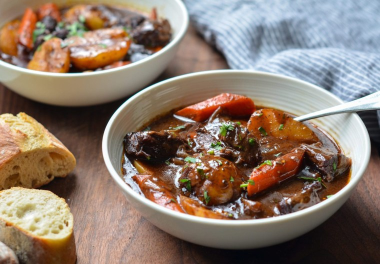

Index | Dirt Cups | Beef Stew | Ice Water
Beef Stew with Carrots & Potatoes

This classic French beef stew is the ultimate cold weather comfort food. After a few hours in the oven, the meat becomes meltingly tender and enveloped in a rich wine sauce.
Ingredients
- 3 pounds boneless beef chuck (well-marbled), cut into 1½-inch pieces
- 2 teaspoons salt
- 1 teaspoon freshly ground black pepper
- 3 tablespoons olive oil
- 2 medium yellow onions, cut into 1-inch chunks
- 7 cloves garlic, peeled and smashed
- 2 tablespoons balsamic vinegar
- 1½ tablespoons tomato paste
- ¼ cup all-purpose flour
- 2 cups dry red wine
Steps to Make It
- Combine flour, garlic powder and salt & pepper. Toss beef in flour mixture.
- Heat olive oil in a large Dutch oven or pot. Cook the beef and onions until browned.
- Add beef broth and red wine while scraping up any brown bits in the pan.
- Stir in all remaining ingredients except for peas, cornstarch and water. Reduce heat to medium low, cover and simmer 1 hour or until beef is tender (up to 90 minutes).
- Mix equal parts cornstarch and water to create a slurry. Slowly add the slurry to the boiling stew to reach desired consistency (you may not need all of the slurry, if you'd like a thicker stew, you can add extra).
- Stir in peas and simmer 5-10 minutes before serving . Season with salt & pepper to taste.